set.seed(20240312)
n <- 1000
X <- cbind(1, rnorm(n), rnorm(n), rnorm(n), rnorm(n))
betaTrue <- c(-1,0,0,1,2)
y <- X %*% betaTrue
SNR <- 2
y <- y + rnorm(n, 0, sqrt(var(y)/SNR))L8 Boosting and \(L_1\) regularization
Refer to Hastie, Tibshirani, and Friedman (2001) Chapters 3.4, 3.8.1-2, 10, 16.2
1 Sparse machine learning methods
One of the major machine learning discoveries of the last 20 years is the development of “sparse” learning methods. These are methods for fitting models in cases where there are a large number of features, perhaps few of them with genuine predictive information about the outcome. This is particularly true of genome-wide association studies (GWAS) in which hundreds of thousands of candidate genes might predict some kind of genetic trait. Large numbers of features also show up in social science studies since many data collection efforts (NELS, NCVS, NSDUH, etc.) include over 1000 measurements on respondents.
The mathematics of sparse learning is tied to an absolute value penalty on coefficients, also known as an \(L_1\) penalty or the LASSO (Least Absolute Shrinkage and Selection Operator).
1.1 \(L_1\) penalty and the LASSO
Consider our now familiar linear model \(f(\mathbf{x}) = \beta'\mathbf{x}\) where we want to minimize squared error. \[ J(\beta) = \sum_{i=1}^n (y_i-\beta'\mathbf{x}_i)^2 \] Previous we had explored ridge regression that put a squared penalty on the size of the coefficients. \[ J(\beta) = \sum_{i=1}^n (y_i-\beta'\mathbf{x}_i)^2 + \lambda\sum_{j=1}^d \beta_j^2 \] The LASSO replaces the squared penalty, often called an \(L_2\) penalty, with an absolute penalty, often called an \(L_1\) penalty (Tibshirani 1995). \[ J(\beta) = \sum_{i=1}^n (y_i-\beta'\mathbf{x}_i)^2 + \lambda\sum_{j=1}^d |\beta_j| \] In case you were wondering, there is also an \(L_0\) penalty that is \(\lambda\sum I(\beta_j\neq 0)\), which simply counts how many coefficients are non-zero. This switch to the absolute penalty, at first, seems arbitrary. It is just another way of measuring the size of the coefficients and penalizing their size just prevents them from getting too large. Setting \(\lambda=0\) would give the usual OLS solution while setting \(\lambda=\infty\) would set \(\beta_0=\bar y\) and set all the other coefficients to 0. This is the same property as we saw with ridge regression. Where the \(L_1\) penalty differs from ridge regression is the path the coefficients take between these two end points.
Let’s start with a simulated example. The following code simulates 1,000 observations, each with four independent features generated from a Normal(0,1) distribution. Then the simulation generates the outcome as \[ \begin{split} y_i &= -1 + x_{i3} + 2x_{i4} + \epsilon_i \\ \epsilon &\sim N(0, 1.59) \end{split} \] \(\epsilon\) is random noise added to give a signal-to-noise ratio of 2.0.
The OLS estimates should be roughly \(\begin{bmatrix}-1 & 0 & 0 & 1 & 2\end{bmatrix}\), which they are.
lm1 <- lm(y~-1+X)
coef(lm1) X1 X2 X3 X4 X5
-1.06349997 -0.07795981 -0.05277417 1.05005984 2.00038173 The function L1mse() here computes the mean squared error plus the \(L_1\) penalty. Note that the \(L_1\) penalty does not include the intercept term, \(\beta_0\). This function also computes the gradient vector and Hessian matrix so that we can optimize using Newton-Raphson.
L1mse <- function(beta, y, X, lambda)
{
J <- mean((y - X %*% beta)^2) + lambda*sum(abs(beta[-1]))
attr(J, "gradient") <- (-2/nrow(X))*t(X)%*%(y-X%*%beta) + lambda*c(0,sign(beta[-1]))
attr(J, "hessian") <- (2/nrow(X))*t(X)%*%X
return(J)
}I will start with an initial guess for \(\beta\) with the intercept equal to \(\bar y\) and all of the other coefficients initialized to 0. Let’s test out the L1mse() function at this starting value for \(\beta\) with no \(L_1\) penalty, \(\lambda=0\).
betaHat <- rep(0, length(betaTrue))
betaHat[1] <- mean(y)
L1mse(betaHat, y, X, lambda=0)[1] 7.733564
attr(,"gradient")
[,1]
[1,] -1.412204e-16
[2,] 2.317929e-01
[3,] 4.938739e-02
[4,] -2.192318e+00
[5,] -3.997327e+00
attr(,"hessian")
[,1] [,2] [,3] [,4] [,5]
[1,] 2.00000000 -0.15469711 0.0378722854 0.077122868 0.0181676407
[2,] -0.15469711 2.02775250 0.0274503061 -0.098435530 0.0106224389
[3,] 0.03787229 0.02745031 1.8954160639 0.051134547 0.0007496225
[4,] 0.07712287 -0.09843553 0.0511345470 2.094271294 -0.0034268939
[5,] 0.01816764 0.01062244 0.0007496225 -0.003426894 2.0010934097Remember that nlm() (non-linear minimization) is a general purpose optimization function. I give it the starting value for \(\beta\), and it will optimize L1mse().
nlm1 <- nlm(L1mse,
p=betaHat,
y=y,
X=X,
lambda=0)
nlm1$minimum
[1] 2.574103
$estimate
[1] -1.06349997 -0.07795981 -0.05277417 1.05005984 2.00038173
$gradient
[1] 2.282619e-16 -3.351208e-16 -1.241229e-16 -1.848743e-15 -3.725575e-15
$code
[1] 1
$iterations
[1] 1The results show that it converged in 1 iteration, as it should since with \(\lambda=0\) the loss function is quadratic and Newton-Raphson will solve it exactly. Also note that the solution is identical to OLS.
nlm1$estimate[1] -1.06349997 -0.07795981 -0.05277417 1.05005984 2.00038173coef(lm1) X1 X2 X3 X4 X5
-1.06349997 -0.07795981 -0.05277417 1.05005984 2.00038173 What happens when we set \(\lambda=0.4\), penalizing the absolute size of the coefficients.
nlm1 <- nlm(L1mse,
p=betaHat,
y=y,
X=X,
lambda=0.4,
check.analyticals = FALSE)
nlm1$minimum
[1] 3.736787
$estimate
[1] -1.052841e+00 -5.809961e-07 -1.581168e-07 9.334511e-01 1.875751e+00
$gradient
[1] -2.557954e-16 -2.319637e-01 -3.034838e-01 1.520634e-01 1.520634e-01
$code
[1] 2
$iterations
[1] 40Note that \(\beta_1\) and \(\beta_2\) have been reduced nearly to 0.0000001, essentially 0, while the other coefficients have been shrunk slightly. This is our first glimpse at why the \(L_1\) penalty is special. For certain values of \(\lambda\) it will eliminate some (or many) features.
Let’s try a larger \(\lambda\).
nlm1 <- nlm(L1mse,
p=betaHat,
y=y,
X=X,
lambda=4,
check.analyticals = FALSE)
nlm1$minimum
[1] 7.733564
$estimate
[1] -0.9998063 0.0000000 0.0000000 0.0000000 0.0000000
$gradient
[1] -1.412204e-16 2.317929e-01 4.938739e-02 -2.192318e+00 -3.997327e+00
$code
[1] 3
$iterations
[1] 1Here we see that when \(\lambda=4\) it sets all of the coefficients (except the intercept) to 0. The next block of code explores the path each coefficient takes for \(\lambda\) between 0 and 4.
nIter <- 1000
lambda <- seq(0,4, length.out=nIter)
matBetaHat <- matrix(0, nrow=length(betaHat), ncol=nIter)
matBetaHat[,1] <- coef(lm1)
for(iIter in 2:nIter)
{
nlm1 <- nlm(L1mse,
p=matBetaHat[,iIter-1],
typsize = matBetaHat[,iIter-1],
y=y,
X=X,
lambda=lambda[iIter],
check.analyticals = FALSE)
matBetaHat[,iIter] <- nlm1$estimate
}
L1norm <- apply(matBetaHat[-1,], 2, function(x) sum(abs(x)))
plot(L1norm, rep(0,nIter),
type="n",
ylim=c(-0.2,2),
xlab=expression(L[1]),
ylab=expression(beta))
for(i in 2:nrow(matBetaHat))
{
lines(L1norm, matBetaHat[i,], col=i-1, lwd=2)
}
points(rep(max(L1norm), length(betaTrue)-1), coef(lm1)[-1],
col=1:(length(betaTrue)-1),
pch=15)
text(1,1.2,expression(beta[4]))
text(2,0.7,expression(beta[3]))
text(3.1,0.1,expression(beta[2]))
text(3.0,-0.2,expression(beta[1]))
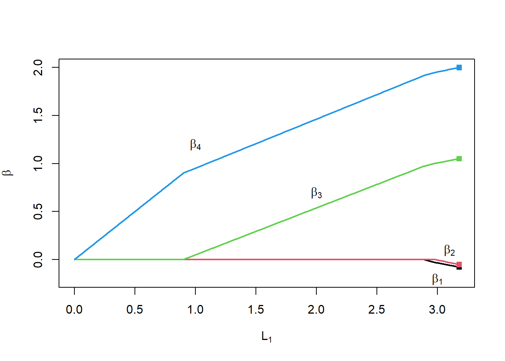
Notice the following:
- When \(\lambda=0\) (right side of the plot), we get the OLS solution
- When \(\lambda\) is large (left side of the plot), all the coefficients are 0
- In between, the coefficients take piecewise linear paths as \(\lambda\) (and the \(L_1\) penalty) changes
- For \(0 <L_1 < 0.9\), only \(\beta_4\) is non-zero
- For \(0.9 <L_1 < 2.9\), only \(\beta_3\) and \(\beta_4\) are non-zero
The linear model with \(L_1\) regularization is built into the glmnet package. glmnet() actually allows the user to mix between ridge regression and the lasso using the \(\alpha\) parameter, with \(\alpha=1\) indicating all lasso, \(\alpha=0\) all ridge regression, and in between a mixture of the two.
Here I ask glmnet() to try 1000 different values for \(\lambda\) between 0 and 2 (\(\lambda\) is scaled a little differently in glmnet()). Note that I’ve dropped the first column from X since glmnet() will add the intercept term.
library(glmnet)
lasso1 <- glmnet(X[,-1], y,
family="gaussian", # squared error
alpha=1, # 1 - lasso, 0 - ridge regression
lambda=seq(2.02,0,length.out=1000))Let’s check that no penalty gives us the original OLS estimates.
coef(lasso1, s=0)5 x 1 sparse Matrix of class "dgCMatrix"
s1
(Intercept) -1.06349997
V1 -0.07795987
V2 -0.05277413
V3 1.05005984
V4 2.00038173coef(lm1) X1 X2 X3 X4 X5
-1.06349997 -0.07795981 -0.05277417 1.05005984 2.00038173 glmnet has a plot function that will trace out the coefficient paths. Note that the x-axis is the value of \(\sum |\beta_j|\) rather than \(\lambda\). The result still shows a piecewise linear coefficient path.
plot(lasso1)
points(rep(3.18, length(betaTrue)-1), coef(lm1)[-1],
col=1:(length(betaTrue)-1),
pch=15)
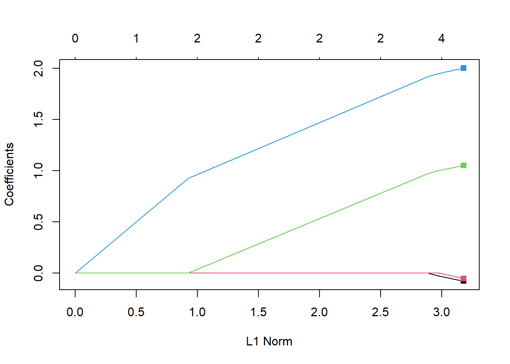
glmnet()
For comparison let’s look at the coefficient paths for ridge regression.
ridge1 <- glmnet(X[,-1], y,
family="gaussian", # squared error
alpha=0) # 1 - lasso, 0 - ridge regression
#lambda=seq(2.02,0,length.out=1000))
plot(ridge1)
points(rep(3.18, length(betaTrue)-1), coef(lm1)[-1],
col=1:(length(betaTrue)-1),
pch=15)
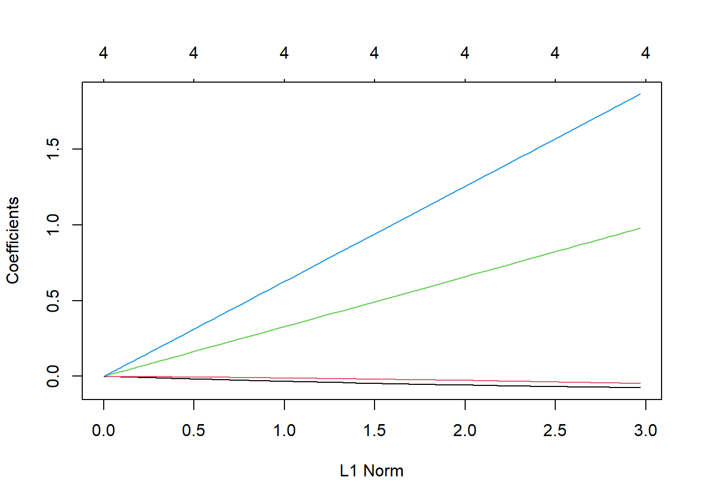
glmnet()
The key distinction to pay attention to here is that or every value of \(\lambda\) all of the coefficients are different from 0. Ridge regression offers no variable selection and requires the tracking and storage of coefficients for all features used in the prediction model.
1.2 Forward stagewise selection
Setting aside the \(L_1\) penalty, let’s try what seems to be a completely different approach. We will initialize all the coefficients to be 0, except \(\beta_0=\bar y\). Then we will take a kind of gradient descent approach. We will consider changing the coefficient of one feature by a small amount, like 0.0001. We will choose which coefficient to change by picking the one that offers the greatest reduction in squared error.
Another way to think of this is that we have an initial model, \(f_0(\mathbf{x})=\bar y\). We would like to improve that prediction model as \[ f_1(\mathbf{x}) = f_0(\mathbf{x}) + \lambda x_{j^*} \] where we pick \(j^*\) to be the one feature that offers the greatest reduction in squared error. Then we will repeat this again and again like \[ f_{k+1}(\mathbf{x}) = f_k(\mathbf{x}) + \lambda x_{j^*} \] always choosing the \(x_{j^*}\) that offers the greatest reduction in squared error.
So perhaps after we iterate, say, 8 times our model will look like \[ \begin{split} f_8(\mathbf{x}) &= \bar y + \lambda x_4+ \lambda x_4+ \lambda x_1 + \lambda x_3+ \lambda x_4+ \lambda x_2+ \lambda x_2 + \lambda x_4 \\ &= \bar y + \lambda x_1 + 2\lambda x_2 + \lambda x_3 + 4\lambda x_4 \end{split} \] Each iteration is incrementally adding a small amount to each feature’s coefficient. With each iteration those coefficients grow toward the OLS solution.
This is an example of functional gradient descent. With each iteration we are moving our prediction function, \(f(\mathbf{x})\), toward a better function, one that has a smaller squared error.
How do we decide which variable is the next one to add to the model? Consider what we are trying to minimize. \[ J(\lambda) = \sum_{i=1}^n (y_i-(f_k(\mathbf{x}_i)+\lambda x_{ij}))^2 \] The “directional derivative” of \(J\) in the direction of \(x_j\) is \(\left.\frac{d}{d\lambda} J(\lambda) \right|_{\lambda=0}\). If we were to nudge \(f_k(\mathbf{x})\) in the direction of \(x_j\), the directional derivative tells us the rate at which squared error will change. We are looking for the steepest decline in squared error, a large negative value. The directional derivative is \[ \begin{split} \left.\frac{d}{d\lambda} J(\lambda) \right|_{\lambda=0} &= \left.\frac{d}{d\lambda} \sum_{i=1}^n (y_i-(f_k(\mathbf{x}_i)+\lambda x_{ij}))^2 \right|_{\lambda=0} \\ &= \left.\sum_{i=1}^n -2(y_i-(f_k(\mathbf{x}_i)+\lambda x_{ij}))x_{ij}\right|_{\lambda=0} \\ &= -2\sum_{i=1}^n (y_i-f_k(\mathbf{x}_i))x_{ij} \end{split} \] All the information about which variable to pick is in \(-(\mathbf{y}-\mathbf{\hat y})'\mathbf{x}_j\) (the 2 is not really important). We can get everything we need by computing \(-\mathbf{X'(\mathbf{y}- \mathbf{\hat y})}\). This expression is also involved in computing the correlation between the columns of \(\mathbf{X}\) and \(\mathbf{y}- \mathbf{\hat y}\). So you can interpret this as finding the feature that has the largest correlation with the current prediction error (or residuals).
Let’s try this on our simulated data.
# reset our betaHat
betaHat <- rep(0, length(betaTrue))
betaHat[1] <- mean(y)
# get predicted values
fx <- X %*% betaHat
dirDeriv <- -t(X) %*% (y-fx)
dirDeriv |> zapsmall() [,1]
[1,] 0.0000
[2,] 115.8965
[3,] 24.6937
[4,] -1096.1591
[5,] -1998.6637Note that the fifth value, which is the one associated with \(\beta_4\) has the largest negative value. This means if we increment \(\hat\beta_4\) by just a little bit we can expect a decrease in squared error that is larger than any decrease we would get by shifting any of the other coefficients.
If the largest directional derivative was a large positive number, it means that subtracting a little from that coefficient would get a large reduction in squared error. So, we need to pay attention to the largest absolute directional derivative and its sign to know which coefficient to adjust and in which direction to adjust it.
Time to run this for real. The next block of code will do 35,000 iterations, compute the directional derivative, find the feature with the largest directional derivative, and adjust the associated coefficient in that direction. Along the way we will generate a plot of the entire coefficient paths.
# reset
betaHat <- rep(0, length(betaTrue))
betaHat[1] <- mean(y)
nIter <- 35000
lambda <- 0.0001
matBetaHatFS <- matrix(0, nrow=length(betaHat), ncol=nIter)
matBetaHatFS[,1] <- betaHat
for(iIter in 2:nIter)
{
fx <- X %*% betaHat
yError <- y - fx
dirDeriv <- -t(X[,-1]) %*% yError
j <- dirDeriv |> abs() |> which.max()
# -lambda because if dirDeriv<0 then we want to increase beta_j
# j+1 because betaHat[1] corresponds to be beta_0
betaHat[j+1] <- betaHat[j+1] - lambda*sign(dirDeriv[j])
matBetaHatFS[,iIter] <- betaHat
}
plot(1:nIter, rep(0,nIter),
type="n",
ylim=c(-0.2,2),
xlab="Iteration",
ylab=expression(beta))
for(i in 2:nrow(matBetaHatFS))
{
lines(1:nIter, matBetaHatFS[i,], col=i-1, lwd=2)
}
points(rep(nIter, length(betaHat)-1), coef(lm1)[-1],
col=1:(length(betaHat)-1),
pch=15)
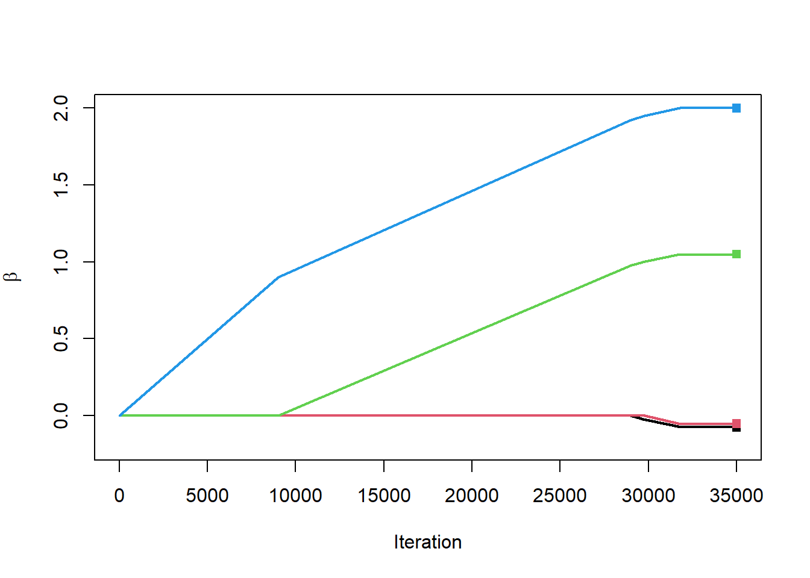
Are you not amazed?!?!? The paths of the coefficients traced out as we iterate look a lot like the same paths we got when we did the hard optimization of the \(L_1\) penalty. Let’s plot the two on top of each other just for a check.
plot(lasso1, lwd=5)
L1norm <- apply(matBetaHatFS[-1,], 2, function(x) sum(abs(x)))
for(i in 2:nrow(matBetaHatFS))
{
lines(L1norm, matBetaHatFS[i,], col=1, lwd=2)
}
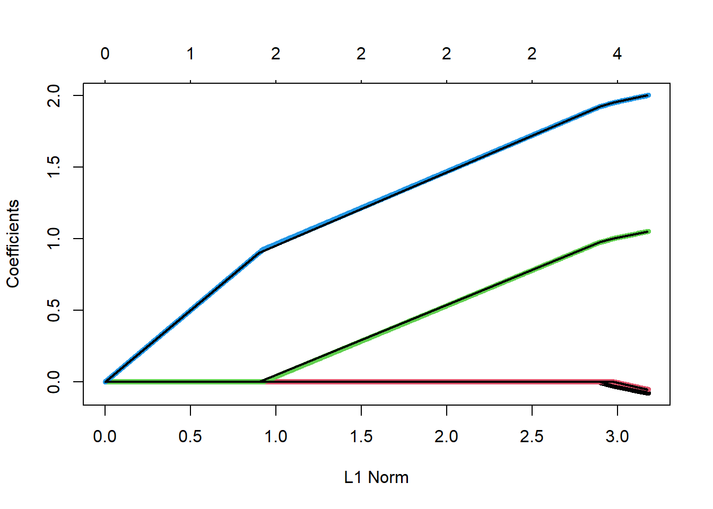
They are identical! In a groundbreaking paper Efron et al. (2004) showed that the entire set of lasso coefficients could be found with this incremental, forward stagewise approach. They went on to show that the coefficient paths are exactly linear and that you do not even have to do this incremental approach. They figured out exactly how long each linear segment would be until the next coefficient became non-zero. They proposed an algorithm that had the same computational complexity as OLS, the least angle regression algorithm (LARS).
Since then, there has been a flurry of research on algorithms to make this approach faster and applicable to more scenarios. For social science, the value of this approach is that it provides a simple method for building predictive models when you have a large number of features, even when features are perfectly correlated.
Returning to the forensic window glass dataset, I am going to load the dataset and create a new feature MgAl that is the sum of Mg and Al. Since there is a linear relationship between this new feature and other variables, this would cause problems for a standard linear regression model.
dGlass <- read.csv("http://archive.ics.uci.edu/ml/machine-learning-databases/glass/glass.data",
header=FALSE,
col.names = c("ID","RI","Na","Mg","Al","Si",
"K","Ca","Ba","Fe","type")) |>
# make a new variable that is a linear combination of others
mutate(MgAl = Mg+Al,
window = as.numeric(type==1))
X <- model.matrix(~RI+Na+Mg+Al+Si+K+Ca+Ba+Fe+MgAl, data=dGlass)
X <- X[,-1] # drop the intercept columnNote that \(\mathbf{X}'\mathbf{X}\) will not be invertible because MgAL is a linear combination of Mg and Al.
solve(t(X) %*% X)Error in solve.default(t(X) %*% X): system is computationally singular: reciprocal condition number = 4.86532e-19If we try to run lm(), it will still run but gives an NA for MgAl.
lm(dGlass$window~X)
Call:
lm(formula = dGlass$window ~ X)
Coefficients:
(Intercept) XRI XNa XMg XAl XSi
-115.3070 16.3621 0.8402 0.9914 0.6461 0.9305
XK XCa XBa XFe XMgAl
0.9305 0.8598 0.9173 0.1036 NA Let’s give the lasso a try. We do need to select the optimal value for \(\lambda\). Naturally, we do this using 10-fold cross-validation, which conveniently the glmnet package has built in. Here I have set family="binomial" since we have a 0/1 outcome. This will minimize the negative Bernoulli log-likelihood instead of trying to minimize squared error.
set.seed(20240312)
lasso1 <- cv.glmnet(X,
dGlass$window,
family="binomial", # logistic regression
alpha=1)
with(lasso1, lambda[which.min(cvm)]) |> log() |> round(1)[1] -5.1plot(lasso1)
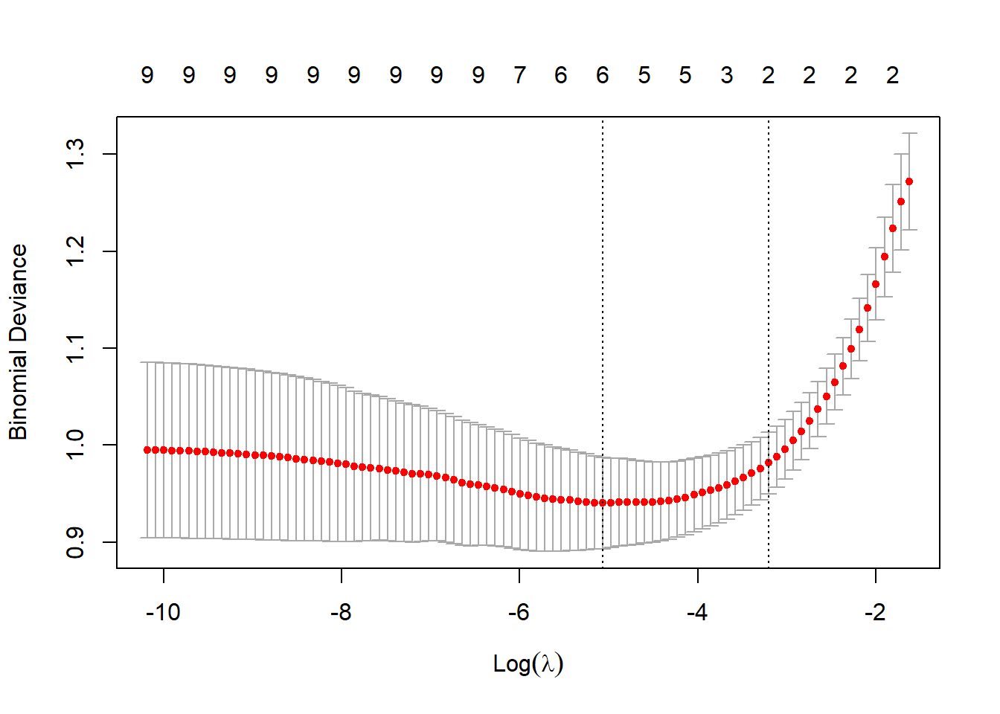
The plot shows a range of values for \(\log(\lambda)\) showing that the optimal value for \(\lambda\) is 0.006 or on the log scale -5.1. The numbers along the top of the figure count the number of non-zero coefficients for different choices of \(\lambda\).
Within lasso1, the object that cv.glmnet() produces, is a glmnet model fit to the full dataset. That is, in addition to doing cross-validation, cv.glmnet() also runs glmnet() against the entire dataset. That means there is no need to fit another glmnet model after running cv.glmnet(). Just like when we used rpart() to fit decision trees, we simply used prune() to get the tree that we wanted. No need to rerun the algorithm. All the functions like coef() and predict() can run directly from lasso1.
For example, coef() extracts the value of \(\hat\beta\) for a specific value of \(\lambda\). With s = "lambda.min" we are asking glmnet to use the \(\lambda\) that minimized the cross-validated negative Bernoulli log-likelihood.
coef(lasso1, s = "lambda.min")11 x 1 sparse Matrix of class "dgCMatrix"
s1
(Intercept) -120.7384861
RI 58.9239738
Na -0.3893883
Mg 1.2747803
Al -2.6194133
Si 0.4840770
K .
Ca .
Ba .
Fe -1.3511375
MgAl . We do need to tell the lasso1 object exactly which set of coefficients that we want, since it has all sets of coefficients for all choices of \(\lambda\). Simply setting s="lambda.min" will tell coef() to use the \(\lambda\) that minimized the cross-validated loss function.
We can also predict using the lasso1 object. Setting s = "lambda.min" insists that the predictions use the coefficients associated with the \(\lambda\) that minimized the cross-validated Bernoulli log-likelihood. By default, when the glmnet model is fit using family="binomial", the predicted values will be on the log odds scale, that is \(\log\frac{p}{1-p}\). Setting type="response" transforms the predictions to the probability scale (using the sigmoid function so you do not have to do it yourself).
pHat <- predict(lasso1, newx=X, s = "lambda.min", type="response")Lastly, we can compute the average Bernoulli log-likelihood on the dGlass data if we wish.
mean(ifelse(dGlass$window==1, log(pHat), log(1-pHat)))[1] -0.4354227Technically, \(L_1\)/lasso is not exactly identical to the incremental forward stagewise selection. When features are highly correlated, the two methods’ coefficient paths can diverge from one another. The forward stagewise approach tends to be more stable and more immune to overfitting. See Hastie, Tibshirani, and Friedman (2001) Chapter 16.2.3 for details.
2 Boosting
2.1 \(L_1\) regularization and decision trees
Linear models of the form \(\beta'\mathbf{x}\) are very constrained. They do not allow for non-linear relationships between features and outcomes. They cannot adapt to important interaction effects, such as groups often of interest in social science, like young black male, low SES first generation college student, or middle-class elderly rural voter. In order to overcome this constraint, we have to intentionally add non-linear terms and interaction effects. For example, \[ f(\mathbf{x}) = \beta_0 + \beta_1\mathrm{age} + \beta_2 \mathrm{age}^2 + \beta_3\mathrm{ses} + \beta_4\log(\mathrm{ses}) + \beta_5\mathrm{age}\times\mathrm{ses} + \beta_6\mathrm{age}\times\log(\mathrm{ses}) + \ldots \] How likely is it that we will pick all the right transformations and all the right interaction effects in the right structural form to get the best predictive model? Ideally, we want the data to tell us what form all these features should have. Which features should not be in the model at all? Which important interaction effects need to be there? Which features have important saturation and threshold effects?
With \(L_1\) regularization we can derive a large number of new features, adding new data columns with squared terms and interacted terms. Then we could just lean on the \(L_1\) penalty to trim away the ones that are unnecessary for getting good predictive performance. The task remains… how do we enumerate all the possible non-linear terms and interaction terms that we might want to include.
One of the appeals of decision trees is that they can capture both non-linear relationships and interaction effects. They also gracefully handle features of different types (numeric, categorical, ordinal) and even handle missing data well. However, they tend not to have the best predictive performance.
We are going to combine the nice attributes of decision trees with a linear model with \(L_1\) regularization and explore what we get. Consider creating a model involving all possible splits on SES in the NELS dataset. There are 2,554 possible single-split decision trees that could come just from using SES (ses<-2.6, ses<-2.5, …, ses<2.5). When we ran rpart(), the algorithm searched over all of these and chose the one that offered the greatest improvement in predictive performance. What if instead we consider a model of the form \[
f(\mathbf{x}) = \beta_0 + \beta_1T_1(\mathbf{x}) + \beta_2T_2(\mathbf{x}) + \ldots + \beta_{2554}T_{2554}(\mathbf{x})
\] and used \(L_1\) regularization to pick out the splits that are important. Let’s try this idea on the NELS dataset predicting dropout.
load("data/nels.RData")
# enumerate all possible splits (midpoints between adjacent values of SES)
sesSplits <- unique(nels0$ses) |> sort()
sesSplits <- sesSplits[-1] - 0.5*diff(sesSplits)Then we’ll take each student in the NELS dataset and create 2,554 0/1 features about whether their SES would put them in the left or right branch of the associated decision tree.
X <- lapply(sesSplits, function(x) as.numeric(nels0$ses < x)) |>
do.call(cbind, args=_)
dim(X)[1] 11381 2554For example, \(T_3(ses)\) has a split point at -2.3745. So X[,3] will be 1 for all observations with SES less than -2.3745 and 0 otherwise. Let’s check.
nels0$ses[X[,3]==1][1] -2.519 -2.414 -2.414 -2.875range(nels0$ses[X[,3]==0])[1] -2.335 2.560Sure enough, when X[,3]==1 all SES values are less than the \(T_3(ses)\) split point and all the SES values are greater than the \(T_3(ses)\) split point when X[,3]==0.
Let’s throw all of these columns into cv.glmnet() to do 10-fold cross-validation to determine how much to penalize \(\sum |\beta_j|\) to get the best predictive performance. Note that I have set family=binomial since we have 0/1 outcome. This will use the Bernoulli log-likelihood as the loss function. I have also set this up to run 10-fold cross-validation in parallel since this will take many minutes to run.
set.seed(20240312)
library(doParallel)
cl <- makeCluster(10)
registerDoParallel(cl)
timeL1 <- system.time(
{
lasso1 <- cv.glmnet(X,
nels0$wave4dropout,
family="binomial", # logistic regression
alpha=1,
parallel = TRUE)
})
print(timeL1) user system elapsed
165.65 4.33 1270.59 stopCluster(cl)Ten-fold cross-validation with a dataset with 11381 students and 2554 features took my computer 21 minutes. That is a long time to figure out the relationship with a single feature.
Let’s plot the cross-validated error to see how well it worked.
plot(lasso1)
# extract the best coefficients
betaHat <- coef(lasso1, s = "lambda.min") |> as.numeric()
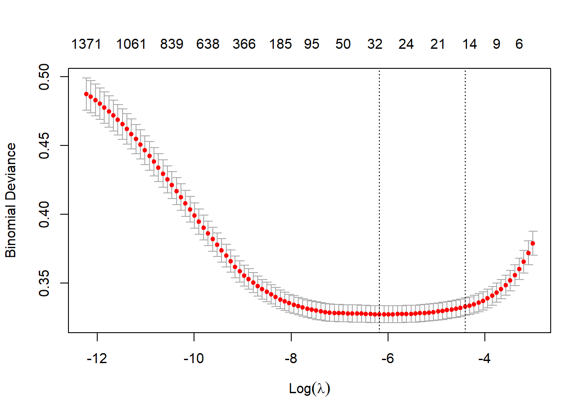
\(L_1\) regularization drastically cut down the number of terms from 2,554 to 31.
Finally, let’s examine what this model looks like. We can plot the relationship between SES and the predicted probability of dropout.
# get predicted probabilities (betahat[1] is the intercept)
pHat <- 1/(1+exp(-(betaHat[1] + X %*% betaHat[-1])))
# or predict(lasso1, newx=X, s="lambda.min", type="response")
# plot the relationship between ses and P(dropout|ses)
i <- order(nels0$ses)
plot(nels0$ses[i], pHat[i], type="l",
xlab="SES", ylab="P(dropout|ses)")
rug(quantile(nels0$ses, probs = (0:10)/10))
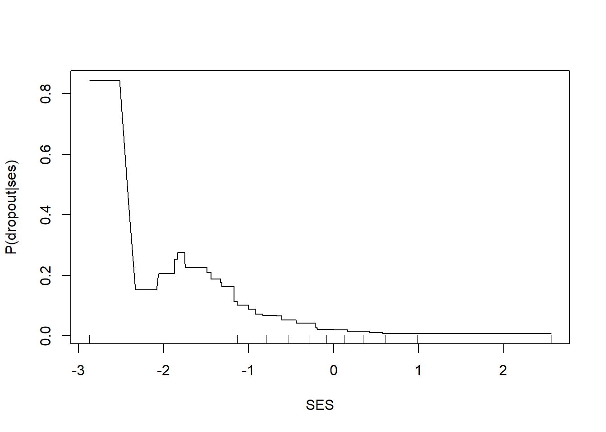
We get a picture similar to those we have seen before showing a strong threshold and saturation effect with lower levels of SES associated with higher dropout rates and low dropout rates once SES exceeds 0.
So, this approach seems to “work,” but there are substantial technical hurdles. This was a complicated model to fit to a dataset with 11381 cases using only a single feature. If we consider the NELS dataset and all 14 features that we used when experimenting with decision trees, there are 2631 possible single split trees. To include interaction effects, we need to allow for decision trees with two splits. There are 6,922,161 possible two-split decision trees! To code them as 0/1 columns we would need 2 columns in X to code the three terminal nodes. So, to include all single split trees and all two-split trees we would need to create 13,846,953 columns in X.
Now we are reaching complete impracticality. We cannot possibly include all of them and run glmnet(). We need an alternative route to use \(L_1\) regularization to trim them down to a smaller set.
2.2 Gradient boosted models
As we saw in a previous section, there is an (approximately) equivalent approach to \(L_1\) regularization using an incremental forward stagewise selection process. Previously we examined an iterative process with which we would add a small amount of one feature to the current model. \[ \begin{split} f_0(\mathbf{x}) &= \bar y \\ f_{k+1}(\mathbf{x}) &= f_k(\mathbf{x}) + \lambda x_{j^*} \end{split} \] At each iteration we would choose \(x_{j^*}\) to make the directional derivative \(-(\mathbf{y}-\mathbf{\hat y})'\mathbf{x}_j\) as small as possible (large negative value). Let’s allow for a little more complexity and find the decision tree that offers the greatest reduction in squared error. \[ \begin{split} f_0(\mathbf{x}) &= \bar y \\ f_{k+1}(\mathbf{x}) &= f_k(\mathbf{x}) + \lambda T_{j^*}(\mathbf{x}) \end{split} \] As before, we can try to find the tree that has the most negative directional derivative. \[ \begin{split} \left.\frac{d}{d\lambda} J(\lambda) \right|_{\lambda=0} &= \left.\frac{d}{d\lambda} \sum_{i=1}^n (y_i-(f_k(\mathbf{x}_i)+\lambda T_j(\mathbf{x}_i)))^2 \right|_{\lambda=0} \\ &= \left.\sum_{i=1}^n -2(y_i-(f_k(\mathbf{x}_i)+\lambda T_j(\mathbf{x}_i)))T_j(\mathbf{x}_i))\right|_{\lambda=0} \\ &= -2\sum_{i=1}^n (y_i-f_k(\mathbf{x}_i))T_j(\mathbf{x}_i) \end{split} \] To make the directional derivative large
- we should try to make the sign of \(T_j(\mathbf{x})\) agree with \(y_i-f_k(\mathbf{x}_i)\)
- we should make \(T_j(\mathbf{x})\) larger when \(y_i-f_k(\mathbf{x}_i)\) is larger
These two points suggest that \(T_j(\mathbf{x})\) should be the decision tree that best predicts \(y-f_k(\mathbf{x})\), the errors or residuals of the current model. This makes sense. If we have a current model, then what should we add to it to make it better? A model that is good at predicting the current model’s errors.
Friedman (2001) proposed the general gradient boosted machine algorithm as follows for a generic loss function \(J(\mathbf{y},f)\) that we are trying to minimize.
- Initialize \(\hat f_0(\mathbf{x})\) to be a constant, \(\hat f_0(\mathbf{x}) = \arg \min_{a} \sum_{i=1}^n J(y_i,a)\)
- For \(k\) in \(1,\ldots,K\) do
- Compute the negative gradient as the working response \(z_i = \left.-\frac{\partial}{\partial f(\mathbf{x}_i)} J(y_i,f(\mathbf{x}_i)) \right|_{f(\mathbf{x}_i)=\hat f(\mathbf{x}_i)}\)
- Fit a decision tree, \(T(\mathbf{x})\), predicting \(z_i\) from the covariates \(\mathbf{x}_i\)
- Update the current prediction model as \(f_k(\mathbf{x}) \leftarrow \hat f_{k-1}(\mathbf{x}) + \lambda T(\mathbf{x})\)
At this point note that the final update closely resembles the gradient descent algorithm. We used gradient descent to improve our estimates of a set of parameters like \[ \hat\beta \leftarrow \hat\beta - \lambda J'(\hat\beta) \] The gradient boosting algorithm is also a gradient descent algorithm only it is optimizing an entire prediction function rather than parameters used to tune a prediction model. Since the decision trees, \(T(\mathbf{x})\), are approximating a derivative, we can think of the gradient boosting algorithm as an analogous functional gradient descent. \[ \begin{split} \hat f(\mathbf{x}) &\leftarrow \hat f(\mathbf{x}) + \lambda T(\mathbf{x})\\ & \approx \hat f(\mathbf{x}) - \lambda J'(\hat f(\mathbf{x})) \end{split} \]
2.3 Gradient boosting algorithm for squared error
For squared error we have \[ J(\mathbf{y}, f) = \sum_{i=1}^n (y_i-f(\mathbf{x}_i))^2 \] Initialize \[ \begin{split} \hat f_0(\mathbf{x}) &= \arg \min_a \sum_{i=1}^n (y_i-a)^2 \\ &= \bar y \end{split} \] The working response for squared error is \[ \begin{split} z_i &= \left.-\frac{\partial}{\partial f(\mathbf{x}_i)} (y_i-f(\mathbf{x}_i))^2 \right|_{f(\mathbf{x}_i)=\hat f(\mathbf{x}_i)} \\ &= \left. 2(y_i-f(\mathbf{x}_i)) \right|_{f(\mathbf{x}_i)=\hat f(\mathbf{x}_i)} \\ &= 2(y_i-\hat f(\mathbf{x}_i)) \end{split} \] Normally we ignore any constants (like the 2 here) since they will just get absorbed into the tree or into \(\lambda\).
We have completed the only mathematical work that we needed to do and now we can assemble an algorithm to do the work for us. Let’s take one step of the gbm algorithm, moving from \(f_0\) to \(f_1\).
library(rpart)
# set lambda to be a small number
lambda <- 0.01
# initialize to the mean
fxHat <- rep(mean(nels0$wave4dropout), nrow(nels0))
# compute the working response
nels0$z <- nels0$wave4dropout - fxHat
# fit a regression tree to the working response
tree1 <- rpart(z ~ ses,
data=nels0,
method = "anova",
control = rpart.control(xval=0, maxdepth = 1))
# see which tree got selected first
par(xpd=NA)
plot(tree1); text(tree1)
# update to get f_1(x)
fxHat <- fxHat + lambda * predict(tree1, newdata=nels0)
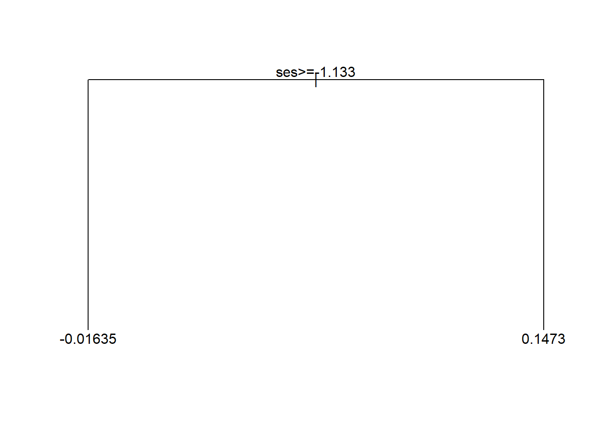
After a single iteration we can take a look at \(f_1\).
i <- order(nels0$ses)
plot(nels0$ses[i], fxHat[i], type="l",
xlab="ses",
ylab=expression(f[1](x)))
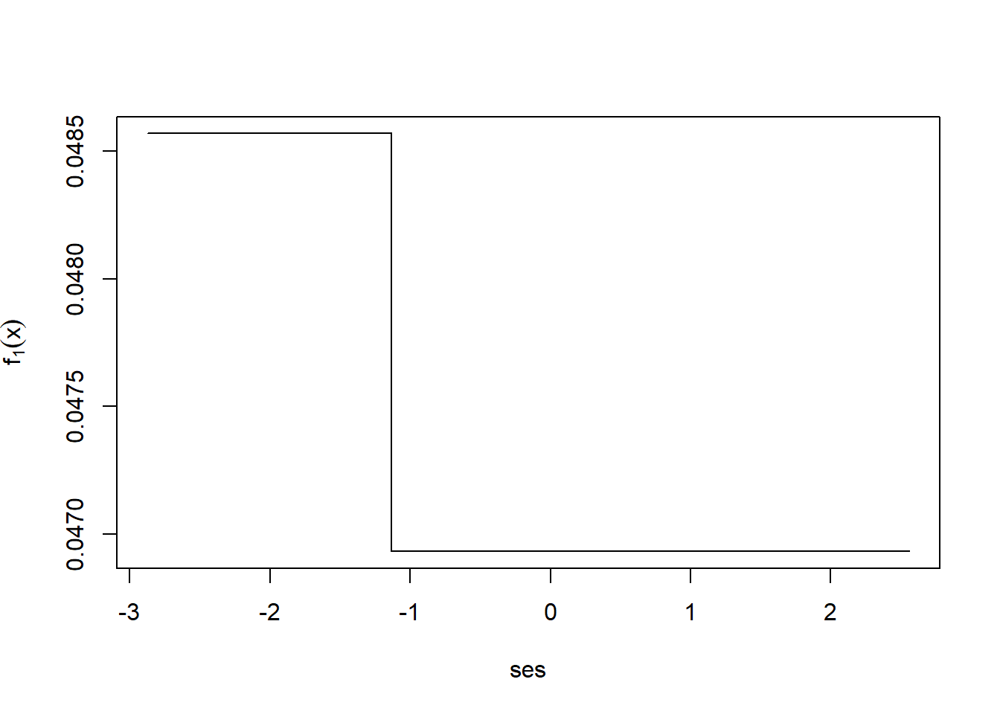
Now let’s let it run for 1,000 total iterations.
for(k in 2:1000)
{
nels0$z <- nels0$wave4dropout - fxHat
tree1 <- rpart(z ~ ses,
data=nels0,
method = "anova",
control = rpart.control(xval=0, maxdepth = 1))
fxHat <- fxHat + lambda * predict(tree1, newdata=nels0)
}
i <- order(nels0$ses)
plot(nels0$ses[i], fxHat[i], type="l",
xlab="ses",
ylab=expression(f[1000](x)))
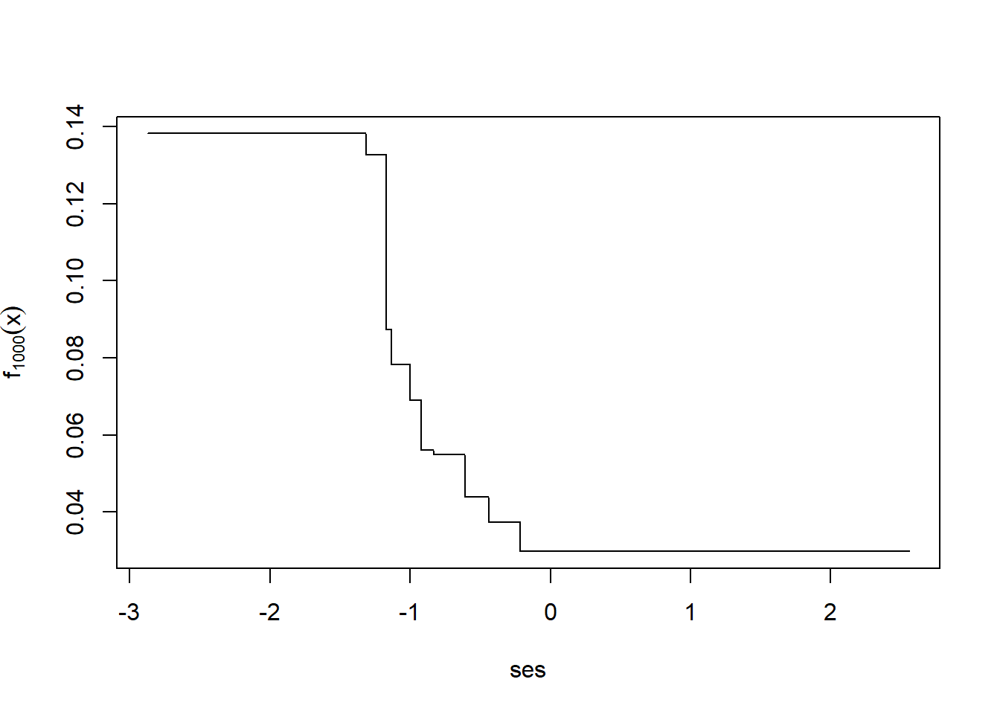
2.4 Gradient boosting algorithm for negative Bernoulli log-likelihood (LogitBoost)
If our interest is obtaining the best estimates of the probability of dropout, the Bernoulli log-likelihood is the loss function best designed for good probability estimates. Note that I have the negative Bernoulli log-likelihood so that we are aiming to minimize this loss function. \[ J(\mathbf{y}, f) = -\sum_{i=1}^n y_if(\mathbf{x}_i) - \log(1+e^{f(\mathbf{x}_i)}) \] Initialize \[ \begin{split} \hat f_0(\mathbf{x}) &= \arg \min_a -\sum_{i=1}^n y_ia - \log(1+e^a) \\ &= \log\frac{\bar y}{1-\bar y} \end{split} \] The working response for squared error is \[ \begin{split} z_i &= \left.-\frac{\partial}{\partial f(\mathbf{x}_i)} -\sum_{i=1}^n y_if(\mathbf{x}_i) - \log(1+e^{f(\mathbf{x}_i)}) \right|_{f(\mathbf{x}_i)=\hat f(\mathbf{x}_i)} \\ &= \left. y_i-\frac{1}{1+e^{-f(\mathbf{x}_i)}} \right|_{f(\mathbf{x}_i)=\hat f(\mathbf{x}_i)} \\ &= y_i-\frac{1}{1+e^{-\hat f(\mathbf{x}_i)}} \\ &= y_i-\hat y_i \end{split} \] Again, this all the mathematical work that we needed to do to assemble the GBM algorithm. Along the way we have encountered quantities that are not surprising at this point. The baseline log odds are the initial estimate and the working response is just the difference between \(y_i\) and \(\hat y_i\).
# set lambda to be a small number
lambda <- 0.01
# initialize to the baseline log odds
yBar <- mean(nels0$wave4dropout)
fxHat <- rep(log(yBar/(1-yBar)), nrow(nels0))
# compute the working response
nels0$z <- nels0$wave4dropout - 1/(1+exp(-fxHat))
# fit a regression tree to the working response
tree1 <- rpart(z ~ ses,
data=nels0,
method = "anova",
control = rpart.control(xval=0, maxdepth = 1))
# see which tree got selected first
par(xpd=NA)
plot(tree1); text(tree1)
# update to get f_1(x)
fxHat <- fxHat + lambda * predict(tree1, newdata=nels0)After a single iteration we can take a look at \(f_1\).
i <- order(nels0$ses)
plot(nels0$ses[i], fxHat[i], type="l",
xlab="ses",
ylab=expression(f[1](x)))
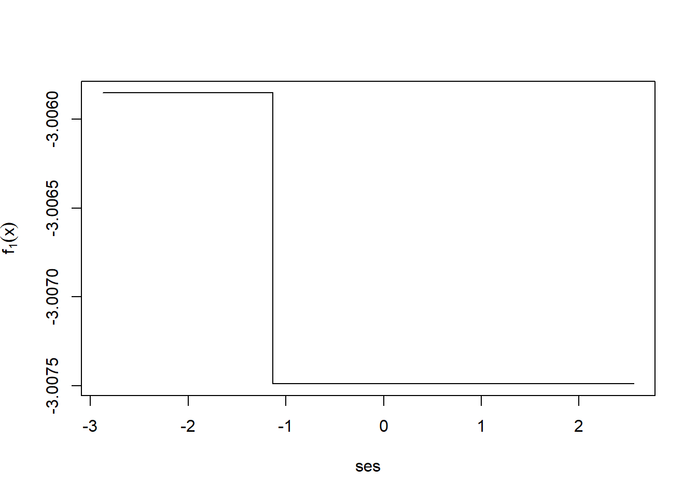
Now let’s let it run for 1,000 total iterations.
for(k in 2:1000)
{
nels0$z <- nels0$wave4dropout - 1/(1+exp(-fxHat))
tree1 <- rpart(z ~ ses,
data=nels0,
method = "anova",
control = rpart.control(xval=0, maxdepth = 1))
fxHat <- fxHat + lambda * predict(tree1, newdata=nels0)
}
i <- order(nels0$ses)
par(mfrow=c(1,2))
plot(nels0$ses[i], fxHat[i], type="l",
xlab="ses",
ylab=expression(f[1000](x)),
main="log odds scale")
plot(nels0$ses[i], 1/(1+exp(-fxHat[i])), type="l",
xlab="ses",
ylab=expression(P[1000](x)),
main="probability scale")
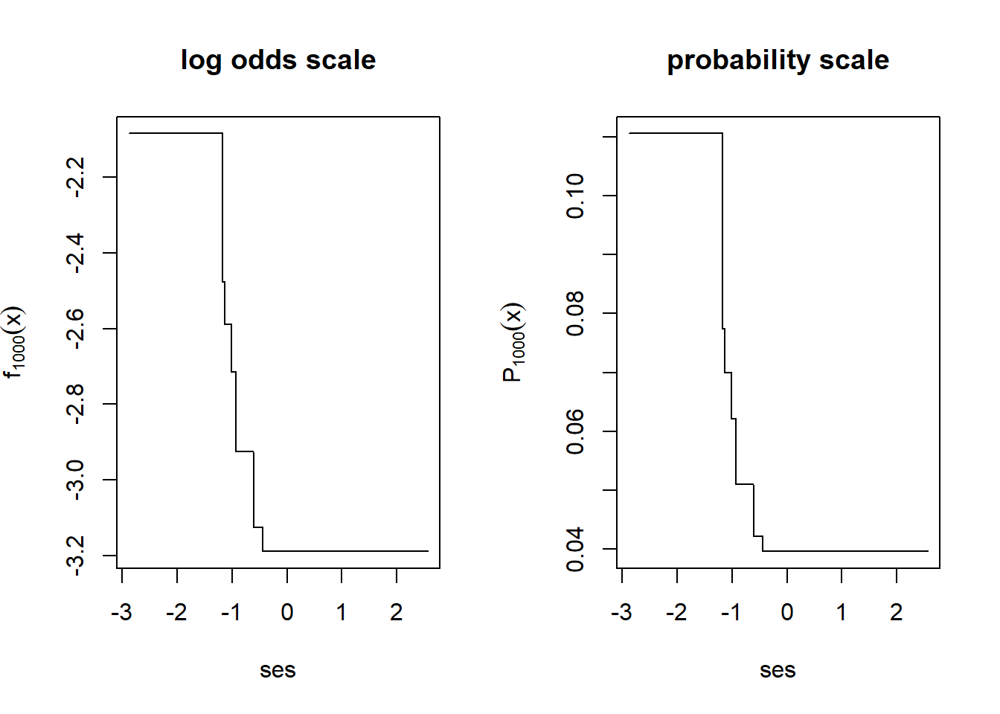
2.5 AdaBoost algorithm
Freund and Schapire (1997) proposed the first boosting algorithm, the adaptive boosting or AdaBoost algorithm. Although the paper appeared in 1997, the idea was circulating around for 1-2 years earlier. It got tremendous attention after Elkan (1997) tried a boosted naïve Bayes classifier and won the Knowledge Discovery and Data Mining Cup in 1997, a prediction contest in which his submission outperformed other extremely well-funded teams.
The computer scientists described the approach algorithmically at the time. That is, they described the recipe for how to do it, but offered only some insight into why it should be better than other existing methods at the time. Friedman, Hastie, and Tibshirani (2000) revealed that the algorithm was a gradient descent style algorithm with a particular objective function.
Consider the following representation of the misclassification error rate \[ J(\mathbf{y},f) = \frac{1}{n}\sum_{i=1}^n I(2y_i-1 \neq \mathrm{sign}(f(\mathbf{x}_i))) \] \(2y_i-1\) simply takes the \(\{0,1\}\) outcomes and translates them to be \(\{-1,1\}\). Then all we care about for predictions is the sign on the prediction function \(f(\mathbf{x})\). When \(f(\mathbf{x})>0\) then we predict \(y=1\) and when \(f(\mathbf{x})<0\) we predict \(y=0\)… or that \(2y-1=-1\). Another way to represent a classification error instead of \(2y_i-1 \neq \mathrm{sign}(f(\mathbf{x}_i))\) is that \((2y_i-1)(f(\mathbf{x}_i)) < 0\). That is, the prediction model and \(2y-1\) disagree on signs, then there is a misclassification.
Schapire and Singer (1999) noted that there is a differentiable upper bound on the misclassification rate. \[ \begin{split} J(\mathbf{y},f) &= \frac{1}{n}\sum_{i=1}^n I(2y_i-1 \neq \mathrm{sign}(f(\mathbf{x}_i))) \\ &\leq \frac{1}{n}\sum_{i=1}^n \exp(-(2y_i-1)f(\mathbf{x}_i)) \end{split} \] To see why this inequality holds, it is helpful to look at the next figure. Misclassification is represented by the step function in the figure below. Note that the AdaBoost exponential loss function is always larger than the misclassification indicator function. They only intersect at (0,1). So the idea of the AdaBoost algorithm is that, since derivatives and optimization of the misclassification loss function is awkward, use the exponential upper bound and minimize that instead.
yF <- seq(-2,2, length.out=100)
plot(yF, exp(-yF), type="n", ylim=c(0,4),
xlab=expression((2*y-1)*f(x)),
ylab=expression(J(f)))
i <- exp(-yF)<4
lines(yF[i], exp(-yF)[i], lwd=3)
lines(yF, yF<0, lwd=3)
i <- log(1+exp(-yF)) + (1-log(2)) < 4
lines(yF[i], log(1+exp(-yF[i]))/(log(2)), col="red", lwd=3)
lines(yF, 4*(1-1/(1+exp(-yF)))^2, col="blue", lwd=3)
text(-1.16,3.53,"AdaBoost", adj=0)
text(-1.83,2.3,"Bernoulli",adj=0)
text(-2.0,3.2,"Squared error",adj=0)
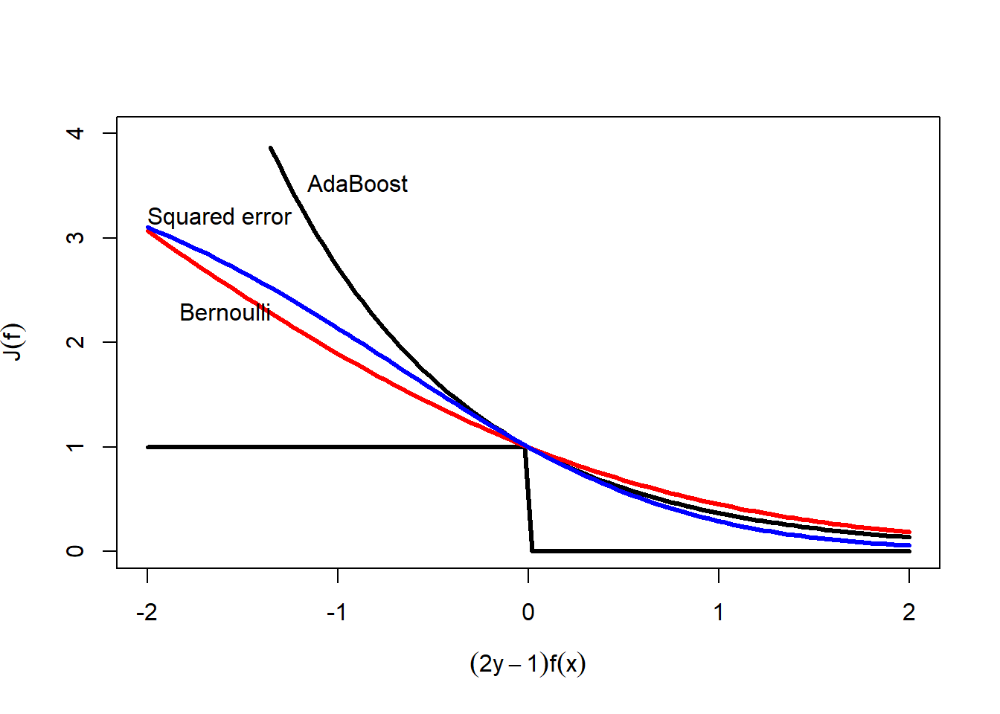
It also turns out that the negative Bernoulli log-likelihood also is an upper bound on the misclassification rate. You can show that \[ 1-\frac{1}{1+e^{-f(\mathbf{x})}} = \frac{1}{1+e^{f(\mathbf{x})}} \] So we can write \[ \begin{split} -y\log\frac{1}{1+e^{-f(\mathbf{x})}} - (1-y)\log\left(1-\frac{1}{1+e^{-f(\mathbf{x})}}\right) &= -\log\frac{1}{1+e^{-(2y-1)f(\mathbf{x})}} \\ &= \log (1+e^{-(2y-1)f(\mathbf{x})}) \end{split} \] And we can show that, with a little rescaling, this too can be an upperbound on misclassification. \[ \begin{split} J(\mathbf{y},f) &= \frac{1}{n}\sum_{i=1}^n I(2y_i-1 \neq \mathrm{sign}(f(\mathbf{x}_i))) \\ &\leq \frac{1}{n}\sum_{i=1}^n \frac{1}{\log 2}\log (1+e^{-(2y_i-1)f(\mathbf{x}_i)}) \end{split} \] This bound is shown with the red curve in the figure above.
Also squared error can be an upper bound on misclassification. \[ \begin{split} J(\mathbf{y},f) &= \frac{1}{n}\sum_{i=1}^n I(2y_i-1 \neq \mathrm{sign}(f(\mathbf{x}_i))) \\ &\leq \frac{1}{n}\sum_{i=1}^n 4\left(y_i - \frac{1}{1+e^{-f(\mathbf{x}_i)}}\right)^2 \\ &\leq \frac{1}{n}\sum_{i=1}^n 4\left(1 - \frac{1}{1+e^{-(2y_i-1)f(\mathbf{x}_i)}}\right)^2 \end{split} \] The figure shows the squared error bound in blue.
2.6 Gradient boosting as an additive model
In our previous experiments with boosting we just tried out the method with a single variable and trees with single splits. I introduced it this way to keep it simpler and so that we could easily visualize the result. I will continue to use only single split decision trees but will introduce additional variables.
Because we are using only single split decision trees, each tree will be a function of only a single variable. As a result, the prediction function will be of the form \[ \begin{split} f(\mathbf{x}) =& \beta_0 +\beta_1 T_1(\mathrm{ses})+\beta_2 T_2(\mathrm{pctFreeLunch})+ \beta_3 T_3(\mathrm{ses})+\beta_4 T_4(\mathrm{urbanicity})+ \\ & \beta_5 T_5(\mathrm{ses})+\beta_6 T_6(\mathrm{ses})+\beta_7 T_7(\mathrm{pctFreeLunch})+\beta_8 T_8(\mathrm{urbanicity}) \\ & + \ldots + \beta_{1000} T_{1000}(\mathrm{famIncome}) \end{split} \] Once we are finished with our boosting iterations, we can reorder the terms like \[ \begin{split} f(\mathbf{x}) &= \beta_0 + \\ &\quad \beta_1 T_1(\mathrm{ses})+\beta_3 T_3(\mathrm{ses})+ \beta_5 T_5(\mathrm{ses})+\beta_6 T_6(\mathrm{ses}) + \\ &\quad \beta_2 T_2(\mathrm{pctFreeLunch})+\beta_7 T_7(\mathrm{pctFreeLunch}) +\\ &\quad \beta_4 T_4(\mathrm{urbanicity})+ \beta_8 T_8(\mathrm{urbanicity}) +\\ &\quad \ldots + \\ &\quad \beta_{1000} T_{1000}(\mathrm{famIncome}) \\ &= \beta_0 + f_1(\mathrm{ses}) + f_2(\mathrm{pctFreeLunch}) + \\ &\quad f_3(\mathrm{urbanicity}) +\ldots + f_{14}(\mathrm{famIncome}) \\ \end{split} \] This is known as an additive model. It is not a linear model in that each of the functions \(f_j(x)\) are not restricted to be linear, but each non-linear function gets added together to form the final prediction function.
As before we will initialize \(\lambda\) to be our small step size or learning rate and \(\beta_0\) to be the baseline log odds.
# set lambda to be a small number
lambda <- 0.05
# initialize to the baseline log odds
yBar <- mean(nels0$wave4dropout)
beta0 <- log(yBar/(1-yBar))Instead of having just one column contain the predictions, I will make a matrix with 14 columns to keep track of the predictions for each of the 14 student features that we will use in the analysis.
fxHatM <- matrix(0, nrow=nrow(nels0), ncol=14)
colnames(fxHatM) <- c("typeSchool","urbanicity","region","pctMinor",
"pctFreeLunch","female","race","ses","parentEd",
"famSize","famStruct","parMarital","famIncome",
"langHome")We will run the same boosting algorithm except now allowing 14 student features to be included in the prediction model. Also, we will be tracking which variable gets split and updating only that column of fxHatM.
for(k in 1:3000)
{
# compute current prediction function
fxHat <- beta0 + rowSums(fxHatM)
# compute working response
nels0$z <- nels0$wave4dropout - 1/(1+exp(-fxHat))
tree1 <- rpart(z~typeSchool+urbanicity+region+
pctMinor+pctFreeLunch+
female+race+ses+parentEd+famSize+famStruct+parMarital+
famIncome+langHome,
method="anova",
data=nels0,
control=rpart.control(cp=0.0, xval=0, maxdepth=1))
# which variable got split?
varSplit <- rownames(tree1$splits)[1]
# update only the component associated with the split variable
fxHatM[,varSplit] <- fxHatM[,varSplit] + lambda * predict(tree1,newdata=nels0)
}Since we have all of the individual components separately, we can plot them out separately to see what patterns the gradient boosted machine learning algorithm uncovered.
par(mfrow=c(5,2), mai=c(0.52,0.25,0.25,0.25))
j <- apply(fxHatM, 2, function(x) any(x!=0))
ylim <- range(fxHatM)
for(xj in names(j[j]))
{
i <- order(nels0[,xj])
plot(nels0[i,xj], fxHatM[i,xj], type="l",
xlab=xj,
ylab=expression(f(x)),
main="",
ylim=ylim)
}
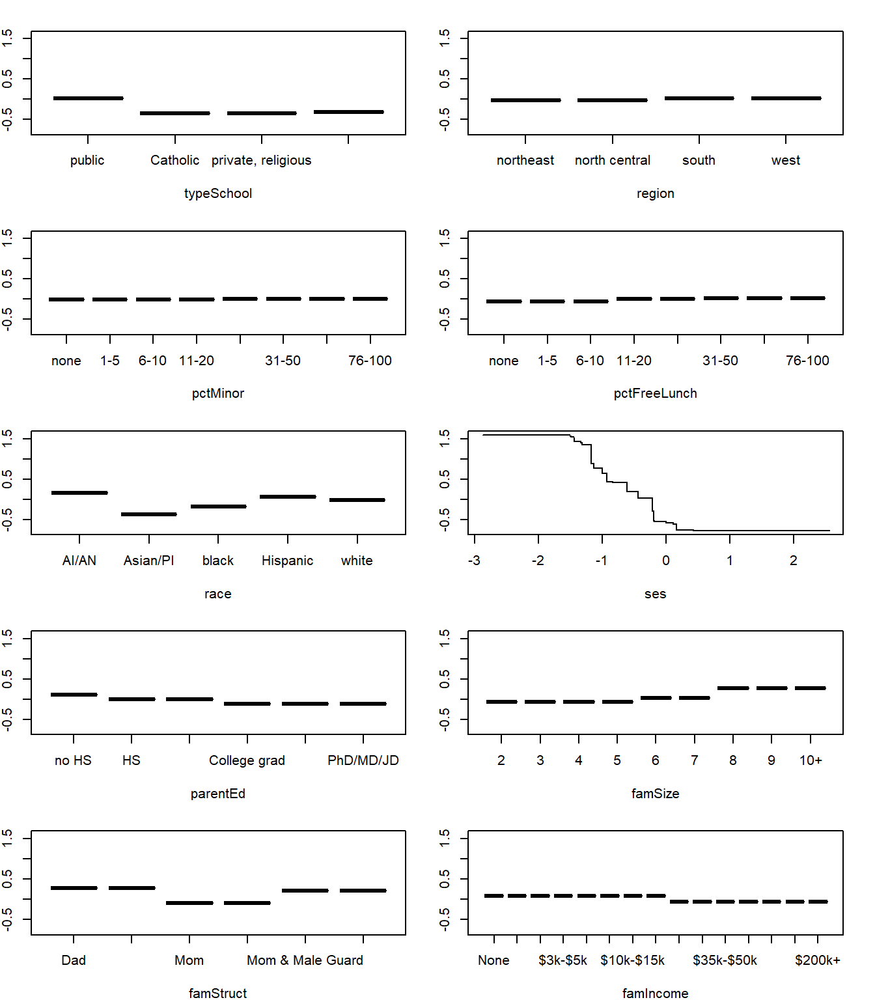
SES clearly has the largest impact on dropout prediction. The other factors, such as family structure, race, and family size have modest effects on the predictions.
3 Using the Generalized Boosted Models (gbm3) package
I wrote the initial version of gbm in 1999 at the time when the use of boosting was really taking off. Since then, numerous collaborators have added new features, new loss functions, and made it run in parallel. The current version of gbm has been downloaded almost 3 million times and about 25,000 times per month. Over 2,000 published scientific articles have used gbm.
There are newer implementations worth evaluating. lightgbm was developed at Microsoft Research (Ke et al. 2017). xgboost (extreme gradient boosting) started at the University of Washington and now has the backing of Nvidia and Intel (Chen and Guestrin 2016). A few benefits of these newer implementations include the use of GPUs and large distributed systems, permitting sparse dataset representations, and availability from multiple environments (R, Python, Julia, etc.).
You are welcome to try lightgbm and xgboost. We are going to use the gbm3. You will need to install gbm3 from GitHub. You only need to install from GitHub when first using gbm3.
remotes::install_github("gbm-developers/gbm3",
build_vignettes = TRUE, force = TRUE)Then load the gbm3 package any time you want to use it.
library(gbm3)Let’s predict dropout from 14 of the student features in the NELS dataset. Although I ignored them previously to keep the discussion simple, I have included the sampling weights here, which is the correct approach for these data. Since the outcome is 0/1 we set distribution=gbm_dist("Bernoulli").
We will run 3,000 iterations and set \(\lambda=0.003\) (shrinkage). The number of iterations and \(\lambda\) go together. Generally smaller values of \(\lambda\) result in better predictive performance. However, models fit with smaller values of \(\lambda\) will require more iterations. Cutting \(\lambda\) by a factor of 2 generally requires doubling the number of iterations. I generally try to run about 3,000 iterations and set \(\lambda\) as small as I can but still get the best number of iterations to be right around 3,000.
Friedman (2002) showed that fitting the trees to a randomly sampled half of the dataset at each iteration doubles the computation speed and results in improved predictive performance. Setting bag_fraction=0.5 implements this. Some have experimented with randomly sampling features to consider at each iteration as well, but we will consider all of them by setting num_features = 14.
gbmt() allows you to give it both a training and test set, but here we are going to ask gbmt() to learn from the entire NELS dataset by setting num_train = nrow(nels0).
We are going to allow up to three-way interactions by setting interaction_depth = 3. This limits the number of splits that any of the decision trees can have to 3. So, every new tree added to the prediction function involves at most 3 distinct student features.
Lastly, we will do 10-fold cross-validation and use up to 12 cores to fit the model.
set.seed(20240316)
gbm1 <- gbmt(wave4dropout~typeSchool+urbanicity+region+
pctMinor+pctFreeLunch+female+race+
ses+parentEd+famSize+famStruct+parMarital+
famIncome+langHome,
data=nels0,
weights=nels0$F4QWT,
distribution=gbm_dist("Bernoulli"),
train_params = training_params(
num_trees = 3000, # number of trees
shrinkage = 0.003, # lambda
bag_fraction = 0.5, # fit trees to random subsample
num_train = nrow(nels0),
min_num_obs_in_node = 10,
interaction_depth = 3, # number of splits
num_features = 14), # number of features
cv_folds=10,
par_details=gbmParallel(num_threads=12),
is_verbose = FALSE) # don't print progressOnce complete, we can check in on the 10-fold cross-validation to determine the optimal number of iterations.
bestNTree <- gbmt_performance(gbm1, method="cv")
plot(bestNTree)
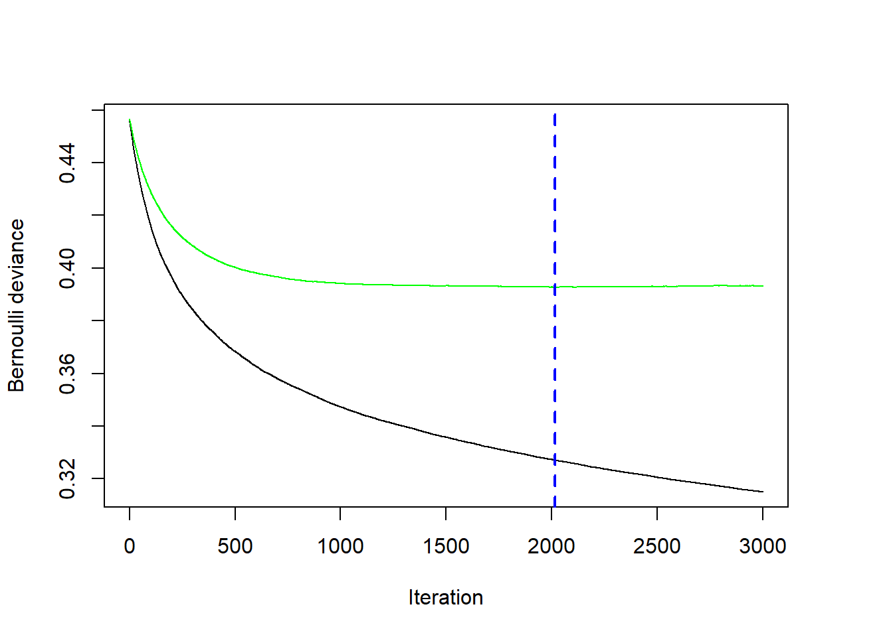
The figure shows that the optimal number of iterations occurs after 2014 iterations. The green line shows the cross-validated negative Bernoulli log-likelihood, while the black line shows the negative Bernoulli likelihood on the training dataset. The performance will always look better and better on the training dataset with each iteration, but this is because the model is very flexible and can start fitting unusual random quirks of the training dataset. Because the green curve is quite flat, the specific choice for the optimal number of iterations is not very sensitive. Choosing any value between 1500 and 3000 in this example would still result in a very reasonable model fit.
To use the model to predict on a dataset, there is a predict() method for the GBM object.
pHat <- predict(gbm1, newdata=nels0, n.trees = bestNTree, type = "response")It may take some effort to determine a good choice for shrinkage. Remember that these models tend to work best when shrinkage (that is, \(\lambda\)) is small. But setting it too small means that the model will learn very slowly and require a lot more iterations (trees) to get to the optimal number of iterations. You might run 3,000 iterations and the performance plot still shows that the cross-validated error is still declining. You have two choices 1) increase the number of iterations, which will require more computation time, or 2) increase shrinkage so that the model learns a little faster. In general, small datasets will require small values of shrinkage (like 0.001) and larger datasets can get good performance with larger values of shrinkage like 0.1. Let’s try running this with a shrinkage that is too small.
set.seed(20240316)
gbm2 <- gbmt(wave4dropout~typeSchool+urbanicity+region+
pctMinor+pctFreeLunch+female+race+
ses+parentEd+famSize+famStruct+parMarital+
famIncome+langHome,
data=nels0,
weights=nels0$F4QWT,
distribution=gbm_dist("Bernoulli"),
train_params = training_params(
num_trees = 3000, # number of trees
shrinkage = 0.0003, # lambda
bag_fraction = 0.5, # fit trees to random subsample
num_train = nrow(nels0),
min_num_obs_in_node = 10,
interaction_depth = 3, # number of splits
num_features = 14), # number of features
cv_folds=10,
par_details=gbmParallel(num_threads=12),
is_verbose = FALSE) # don't print progress
gbmt_performance(gbm2,method="cv") |> plot()
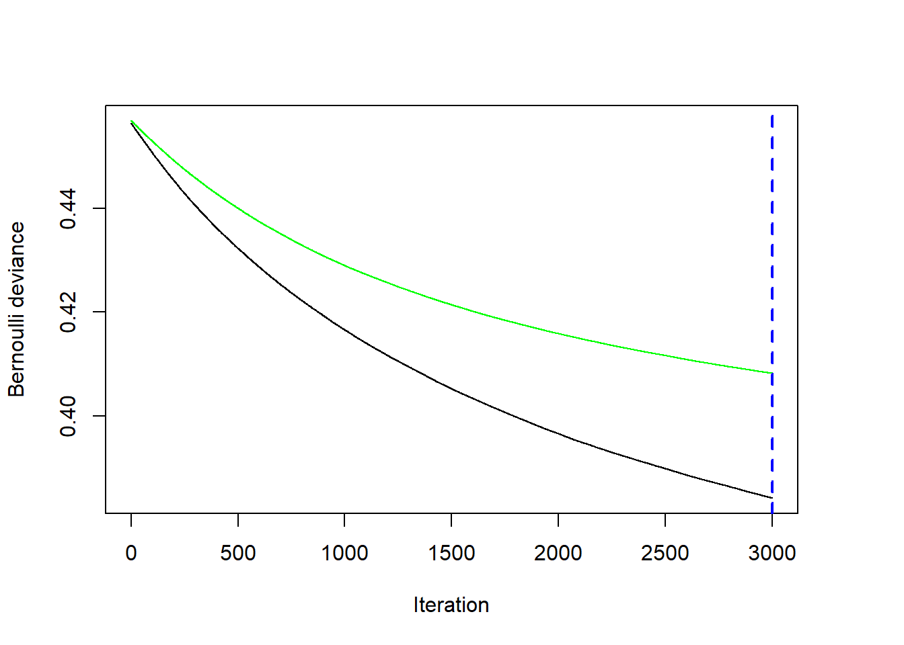
Here you see that the GBM model with the lowest cross-validated error requires 3,000 iterations, but that the loss function is still declining at 3,000 iterations. Clearly more iterations are needed to reach that minimum… or we can increase shrinkage so that gbmt() takes larger learning steps at each iteration so it learns a little faster.
What happens if we err in the other direction and have gbmt() try to learn quickly with few iterations. Here I have set \(\lambda=0.03\).
set.seed(20240316)
gbm3 <- gbmt(wave4dropout~typeSchool+urbanicity+region+
pctMinor+pctFreeLunch+female+race+
ses+parentEd+famSize+famStruct+parMarital+
famIncome+langHome,
data=nels0,
weights=nels0$F4QWT,
distribution=gbm_dist("Bernoulli"),
train_params = training_params(
num_trees = 3000, # number of trees
shrinkage = 0.03, # lambda
bag_fraction = 0.5, # fit trees to random subsample
num_train = nrow(nels0),
min_num_obs_in_node = 10,
interaction_depth = 3, # number of splits
num_features = 14), # number of features
cv_folds=10,
par_details=gbmParallel(num_threads=12),
is_verbose = FALSE) # don't print progress
gbmt_performance(gbm3,method="cv") |> plot()
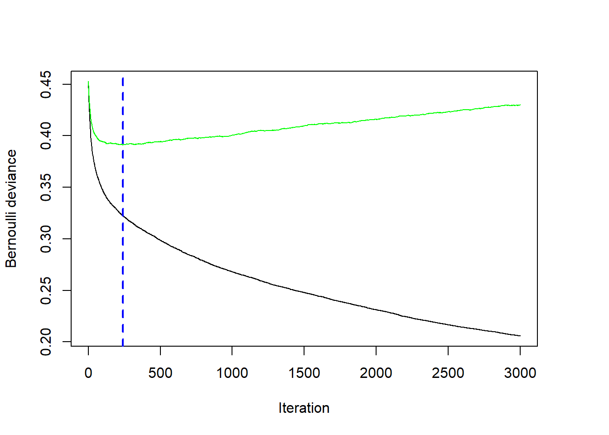
It does indeed reach a minimum quickly with many fewer iterations than the last two models we fit. However, it does not perform nearly as well. The best model we fit stored in gbm1 had a \(\lambda=0.003\) and had an average negative Bernoulli log-likelihood of 0.3927299. The best performance we could get out of the fast learning model with \(\lambda=0.03\) is 0.3911301. Therefore, when fitting gradient boosted models, set shrinkage to be as small as possible while still being able to fit the model in a reasonable amount of computer time.
3.1 Relative influence
Friedman (2001) also developed an extension of a variable’s “relative influence”. If our loss function is squared error, then every split included in a decision tree is reducing that squared error. We can look across all the splits on SES, for example, in every tree and total up all the associated reductions in squared error. This would give us an idea about how much of the reduction in squared error is attributable to splits on SES. We would do the same process for all of the features used in the model.
The relative influence of a feature \(x_j\) is \[
\widehat{RI}_j = \sum_{\mathrm{splits~on~}x_j} I_t^2
\] where \(I_t^2\) is the empirical improvement in tree \(t\) by splitting on \(x_j\) at that point. gbmt() normalizes the relative influence so that they sum to 100 so that they represent the fraction of predictive performance that is attributable to each feature.
Here we see that SES is the primary predictor of dropout with family features (structure, income, parent’s marital status, and size) mattering to a more modest degree.
par(mar=0.1+c(5,7,4,2))
relInf <- summary(gbm1, num_trees=bestNTree)
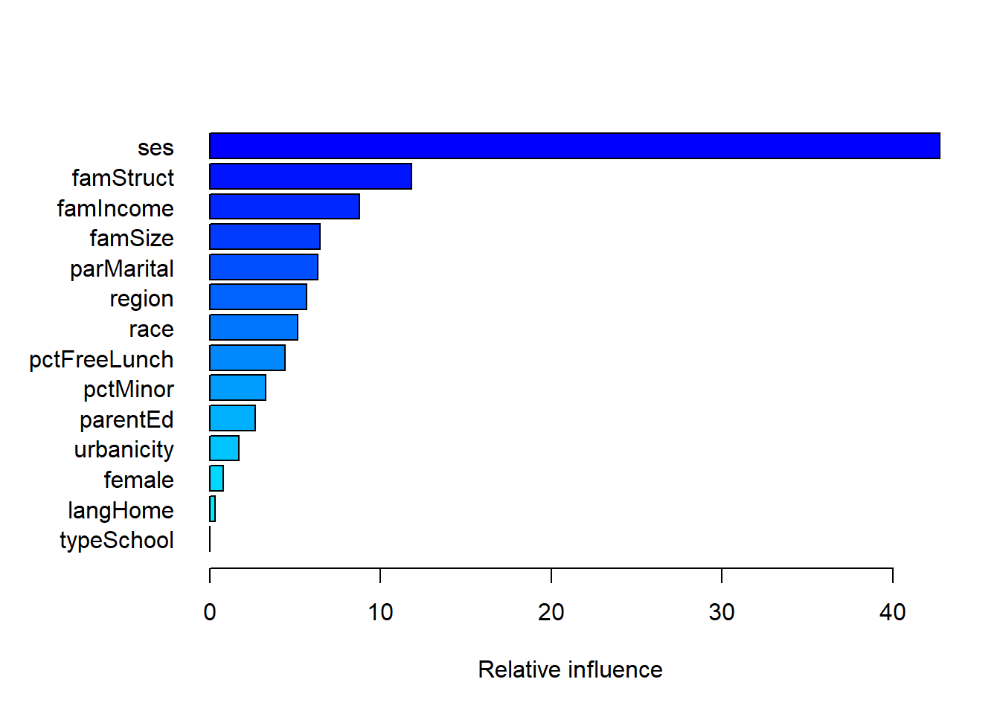
We can also show the table with the same information that is in the figure.
relInf var rel_inf
ses ses 42.7479024
famStruct famStruct 11.7912548
famIncome famIncome 8.7639783
famSize famSize 6.4373210
parMarital parMarital 6.3303950
region region 5.6741448
race race 5.1268490
pctFreeLunch pctFreeLunch 4.3914581
pctMinor pctMinor 3.2686709
parentEd parentEd 2.6661309
urbanicity urbanicity 1.7141224
female female 0.7765825
langHome langHome 0.3111900
typeSchool typeSchool 0.0000000Since we fit this model to minimize the negative Bernoulli log-likelihood, these numbers approximate the percentage reduction in that loss function attributable to each student feature.
3.2 Partial dependence plots
The relative influence describes which features are the most important in the prediction function, but does not describe their shape or even whether the relationship is positive or negative. The partial dependence plot offers some insight into these relationships.
Let’s say we are interested in one specific feature \(x_j\). We will call all the other features \(\mathbf{x}_{-j}\). GBM then produces a prediction function \(\hat f(x_j,\mathbf{x}_{-j})\). Partial dependence fixes a value for \(x_j\) and then averages out over all the combinations of \(\mathbf{x}_{-j}\) observed in the dataset. \[ \hat f_j(x) = \frac{1}{n} \sum_{i=1}^n \hat f(x_j=x, \mathbf{x}_{-j}=\mathbf{x}_{i,-j}) \] If we limit the trees to have at most a single split, then we get an additive model like we saw before and the partial dependence plots can be computed by just predicting using the decision trees that split on \(x_j\). In our NELS example we allowed for up to three-way interactions (three splits) so that in most trees \(x_j\) will be interacted with other student features.
gbm3 has a plot() method that will show partial dependence plots. See ?plot.GBMFit for details about the fitting and various options. Here are the partial dependence plots for the top nine most important predictors of dropout.
par(mfrow=c(3,3), mai=c(0.7,0.6,0.1,0.1))
for(xj in relInf$var[1:9])
plot(gbm1, var_index = xj, num_trees = bestNTree)
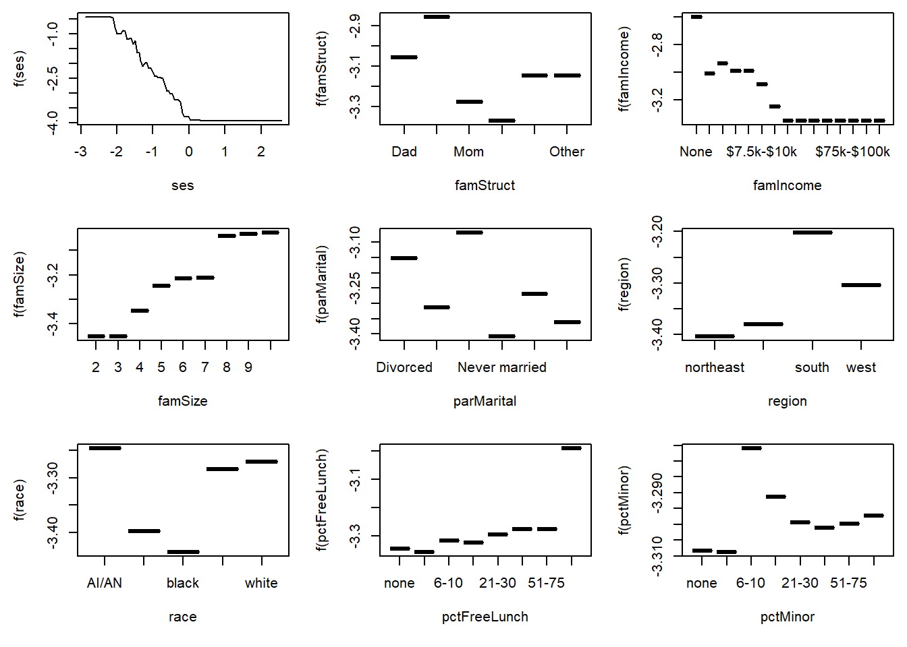
Again, SES shows strong threshold and saturation effects. You can extract the specific numbers used in the plots to get more details.
plot(gbm1, var_index = "famStruct", return_grid = TRUE, num_trees = bestNTree) famStruct y
1 Dad -3.057205
2 Dad & Fem Guard -2.856864
3 Mom -3.275981
4 Mom & Dad -3.369352
5 Mom & Male Guard -3.147131
6 Other -3.146190The highs and lows in the plots seem to be striking, but note that the vertical scale is on the log odds scale. For example, the range of values for pctMinor is from -3.38 to -3.32, a difference of 0.06. This implies that the odds of dropout for the lowest category is 6% smaller (\(e^{-0.06}-1=-0.058\)) than the dropout rate for the highest category. To avoid overinterpreting the changes in the vertical scale, the following plot makes the vertical scales identical in all nine figures.
par(mfrow=c(3,3), mai=c(0.7,0.6,0.1,0.1))
ylim <- plot(gbm1, var_index="ses", return_grid = TRUE,
num_trees = bestNTree)$y |>
range()
for(xj in relInf$var[1:9])
plot(gbm1, var_index = xj, ylim=ylim, num_trees = bestNTree)
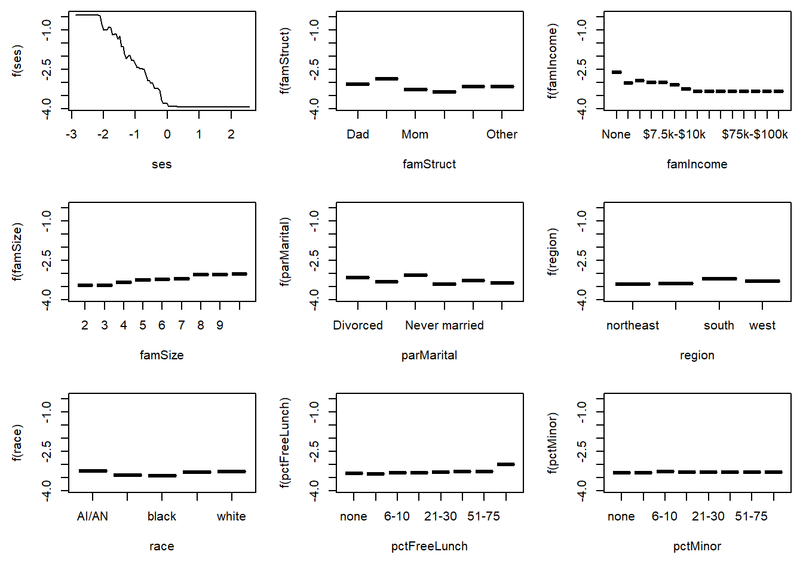
plot() also allows the user to examine two-way relationships. The same partial dependence idea holds, but just fixes two feature values at a time. \[
\hat f_{j_1j_2}(x_1,x_2) = \frac{1}{n} \sum_{i=1}^n \hat f(x_{j_1}=x_1, x_{j_2}=x_2, \mathbf{x}_{-j_1,-j_2}=\mathbf{x}_{i,(-j_1,-j_2)})
\] We can examine whether how the relationship between SES and dropouts varies by family structure.
plot(gbm1, var_index = c("ses","famStruct"), num_trees = bestNTree)
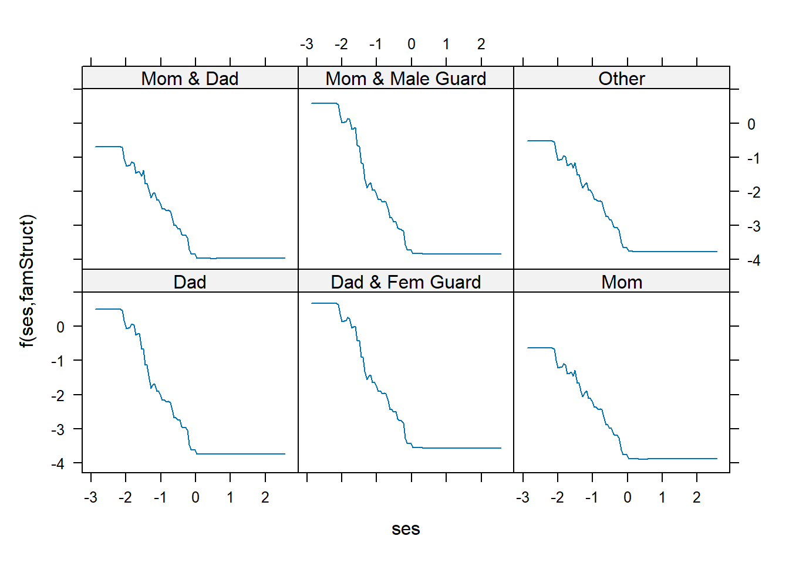
gbm can also compute Friedman-Popescu’s \(H\)-statistic to measure the size of an interaction effect for these complex non-linear models (Friedman and Popescu 2008). \[
H_{jk}^2= \frac{\sum_{i=1}^n \left(\hat f_{jk}(x_{ij},x_{ik}) - \hat f_{j}(x_j) - \hat f_k(x_k)\right)^2}
{\sum_{i=1}^n \hat f_{jk}^2(x_{ij},x_{ik})}
\] This captures the fraction of variance of \(\hat f_{jk}(x_{ij},x_{ik})\) that is not captured by \(\hat f_{j}(x_j) + \hat f_k(x_k)\). Values near 0 mean no/little interaction effect. Note that interact() returns the value \(H\) and not \(H^2\).
gbm1$variables$var_names [1] "typeSchool" "urbanicity" "region" "pctMinor" "pctFreeLunch"
[6] "female" "race" "ses" "parentEd" "famSize"
[11] "famStruct" "parMarital" "famIncome" "langHome" interact(gbm1, data=nels0, var_indices = c(8,11),
num_trees = bestNTree)[1] 0.079805914 Summary
We have covered key concepts for “sparse” machine learning, focusing on \(L_1\) regularization and boosting algorithms.
- \(L_1\) Regularization and Sparse Models:
- \(L_1\) regularization penalizes the absolute size of coefficients to promote the selection of only the most important features
- LASSO eliminates irrelevant features while preserving predictive accuracy
- The coefficient paths appear to be linear segments the weight on the \(L_1\) penalty (\(\lambda\)) changes
- Forward Stagewise Selection:
- We can incrementally build models by iteratively adding features that most reduce the prediction error
- The coefficient path was exactly the same as the LASSO, but with a much more computational efficient approach. This equivalency is best exemplified with the Least Angle Regression (LARS) algorithm
- Boosting Algorithms:
- Gradient boosting is a flexible method using regression trees as basis functions and using a forward stagewise approach to get \(L_1\)-like sparsity
- LogitBoost uses the Bernoulli log-likelihood for classification tasks
- AdaBoost was the original boosting algorithm that minimized an exponential loss function acting as an upper bound on misclassification rates
- Generalized Boosted Models (gbm3):
- Used the
gbm3package to test out boosting on real datasets - Use cross-validation to select the shrinkage and the number of iterations
- Measured the relative influence of individual features
- Examine partial dependence plots to show relationships between features and the outcome
- Used the
Since about 2005, the use of \(L_1\) penalties has become a widespread method for fitting machine learning data involving a large collection of candidate predictors. Boosting is one of the best off-the-shelf prediction models, requiring little to no tuning to get strong predictive performance. More recent implementations are worth exploring such as xgboost.
References
Chen, Tianqi, and Carlos Guestrin. 2016. “XGBoost: A Scalable Tree Boosting System.” In Proceedings of the 22nd ACM SIGKDD International Conference on Knowledge Discovery and Data Mining, 785–94. KDD ’16. New York, NY, USA: Association for Computing Machinery. https://doi.org/10.1145/2939672.2939785.
Efron, Brad, Trevor Hastie, Iain Johnstone, and Rob Tibshirani. 2004. “Least Angle Regression.” Annals of Statistics 32 (2): 407–99.
Elkan, C. 1997. “Boosting and Naı̈ve Bayes Learning.” CS97-557. University of California, San Diego.
Freund, Y., and R. Schapire. 1997. “A Decision-Theoretic Generalization of on-Line Learning and an Application to Boosting.” Journal of Computer and System Sciences 55 (1): 119–39.
Friedman, J. H. 2001. “Greedy Function Approximation: A Gradient Boosting Machine.” The Annals of Statistics 29 (5): 1189–1232.
———. 2002. “Stochastic Gradient Boosting.” Computational Statistics and Data Analysis 38 (4): 367–78.
Friedman, J. H., T. Hastie, and R. Tibshirani. 2000. “Additive Logistic Regression: A Statistical View of Boosting (with Discussion).” Annals of Statistics 28 (2): 337–74.
Friedman, J. H., and Bogdan E. Popescu. 2008. “Predictive learning via rule ensembles.” The Annals of Applied Statistics 2 (3): 916–54. https://doi.org/10.1214/07-AOAS148.
Hastie, T., R. Tibshirani, and J. H. Friedman. 2001. The Elements of Statistical Learning: Data Mining, Inference, and Prediction. Springer-Verlag.
Ke, Guolin, Qi Meng, Thomas Finley, Taifeng Wang, Wei Chen, Weidong Ma, Qiwei Ye, and Tie-Yan Liu. 2017. “LightGBM: A Highly Efficient Gradient Boosting Decision Tree.” Advances in Neural Information Processing Systems 30: 3149–57.
Schapire, Robert E., and Yoram Singer. 1999. “Improved Boosting Algorithms Using Confidence-Rated Predictions.” Machine Learning 37 (3): 297–336.
Tibshirani, Rob. 1995. “Regression Selection and Shrinkage via the Lasso.” Journal of the Royal Statistical Society, Series B 57: 267–88.